1
Mở file cài đặt như bình thường
Nhấp đúp vào file slapwin-installer.exe. Nếu Windows chặn lại và hiện màn hình xanh, bạn tiếp tục sang bước tiếp theo.
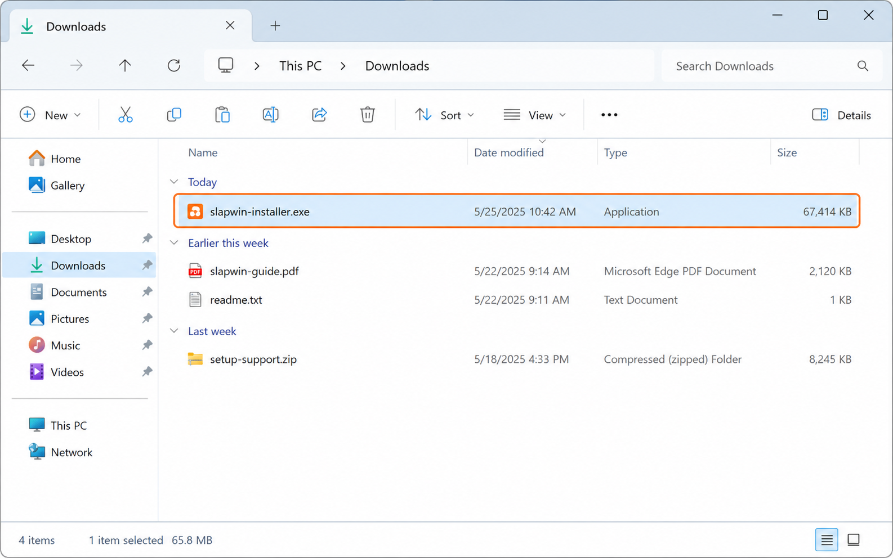
Bấm vào ảnh để xem lớn hơn.
Trang này dành cho trường hợp Slap PC chưa nhận đúng tiếng vỗ tay. Hãy làm lần lượt từng bước dưới đây và chèn ảnh minh họa của bạn vào các khung placeholder tương ứng.
Nếu Windows hiển thị màn hình xanh kiểu Windows protected your PC, đây thường là cảnh báo SmartScreen do file cài đặt còn mới hoặc có độ reputation thấp, không nhất thiết là file bị lỗi.
Nhấp đúp vào file slapwin-installer.exe. Nếu Windows chặn lại và hiện màn hình xanh, bạn tiếp tục sang bước tiếp theo.

Bấm vào ảnh để xem lớn hơn.
Trong màn hình cảnh báo xanh, bấm vào nút hoặc dòng chữ More info để mở thêm tùy chọn chạy file.
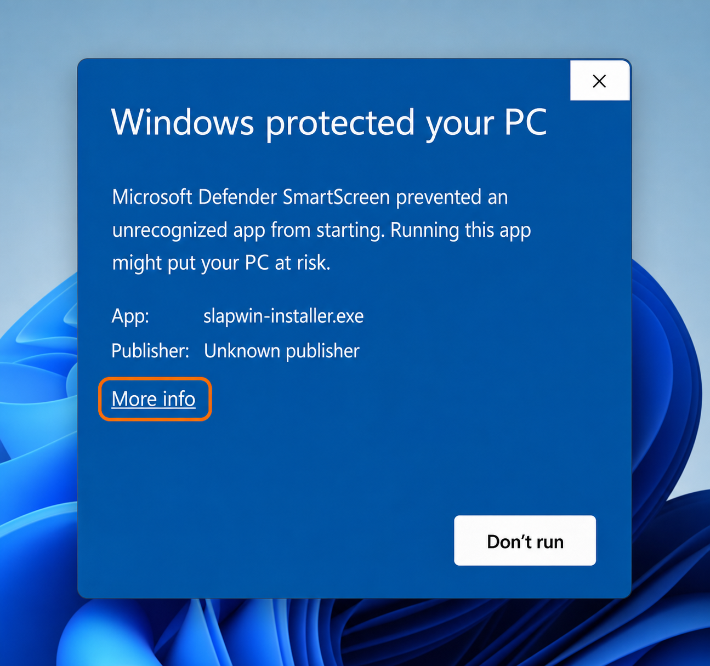
Bấm vào ảnh để xem lớn hơn.
Sau khi hiện thêm tùy chọn, bấm Run anyway để tiếp tục chạy bộ cài. Chỉ làm bước này nếu bạn tải file từ đúng nguồn phát hành của Slap PC.
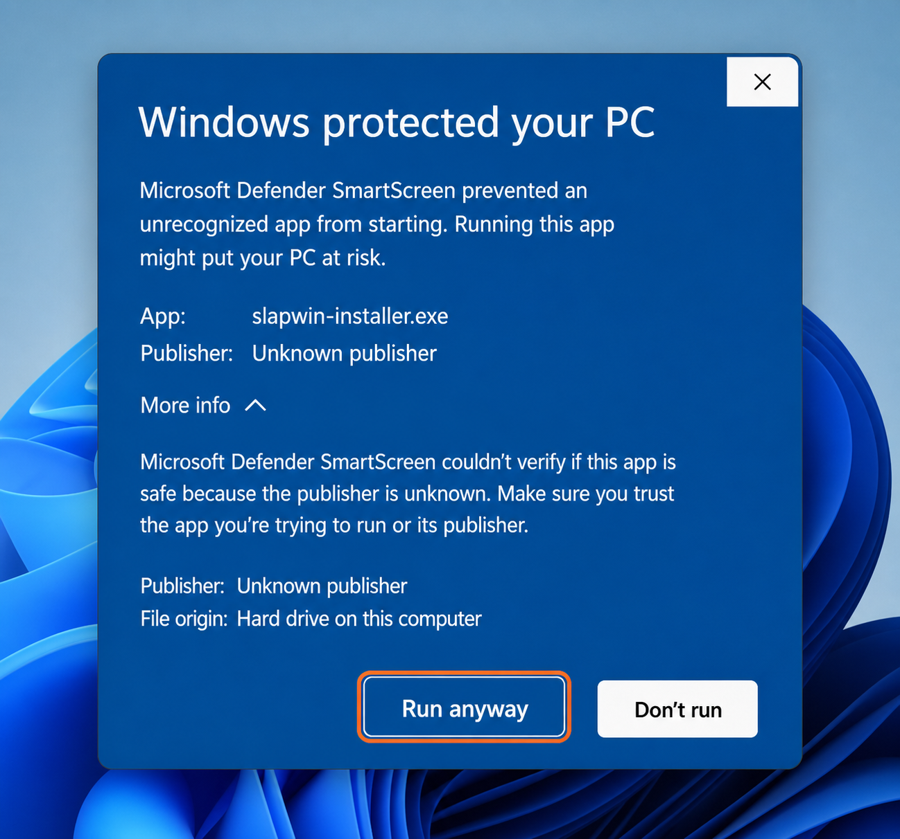
Bấm vào ảnh để xem lớn hơn.
Làm theo từng bước bên dưới. Mỗi bước có một khung ảnh riêng để bạn chèn đúng screenshot tương ứng.
Nhấn tổ hợp phím Win + I để mở cửa sổ Settings của Windows 11.
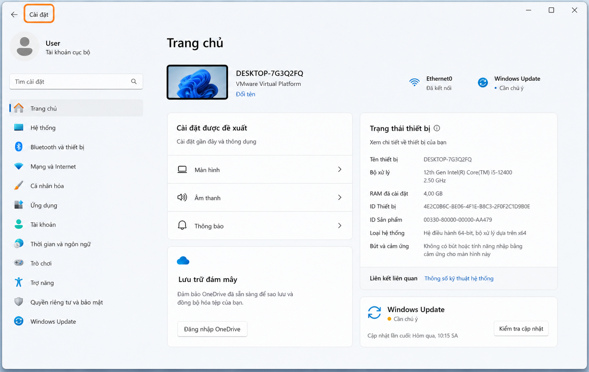
Bấm vào ảnh để xem lớn hơn.
Trong menu bên trái, chọn System, sau đó bấm vào Sound.
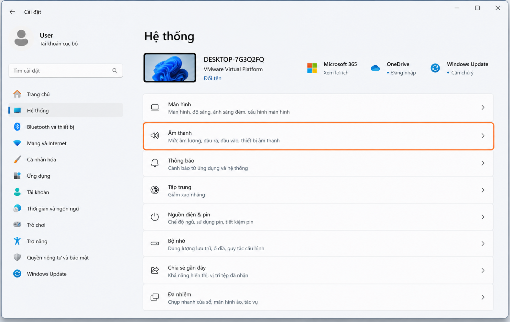
Bấm vào ảnh để xem lớn hơn.
Kéo xuống phần Input rồi chọn đúng microphone mà Slap PC sẽ sử dụng.
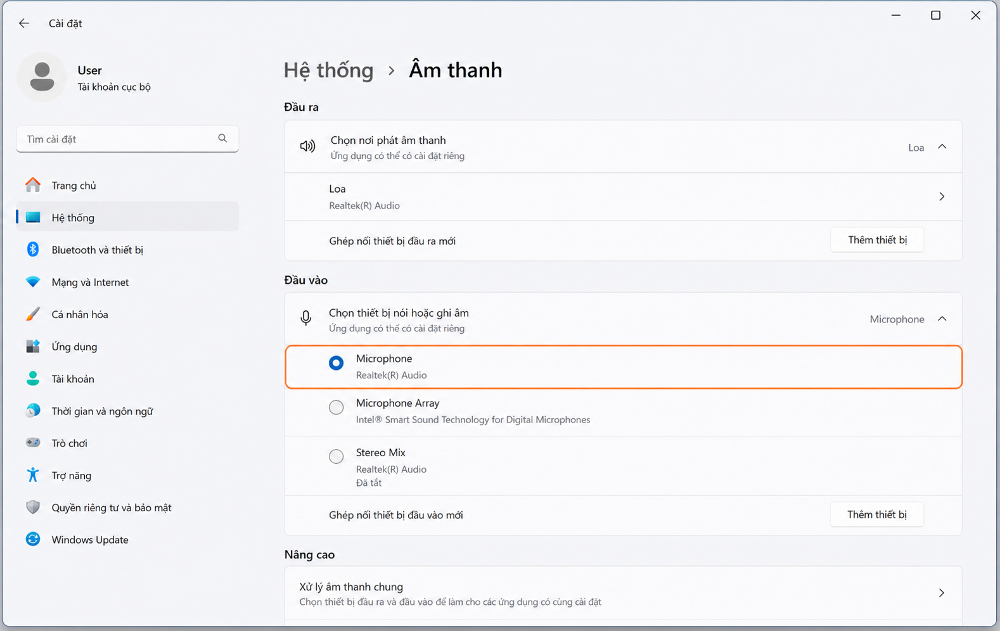
Bấm vào ảnh để xem lớn hơn.
Tại phần cài đặt microphone, tìm mục Audio enhancements và chuyển sang Off.
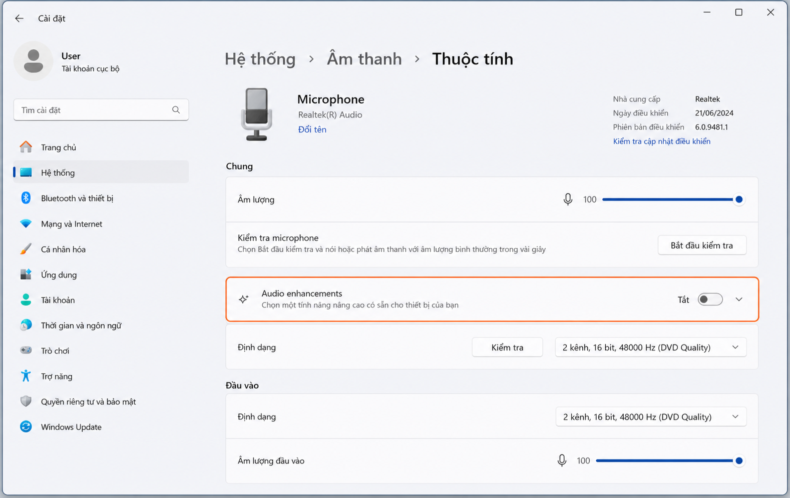
Bấm vào ảnh để xem lớn hơn.
Với Windows 10, hãy đi theo đúng luồng Recording > Microphone > Properties > Advanced. Mỗi bước dưới đây cần một ảnh riêng.
Mở menu Start, tìm Control Panel, sau đó mở ứng dụng này lên.
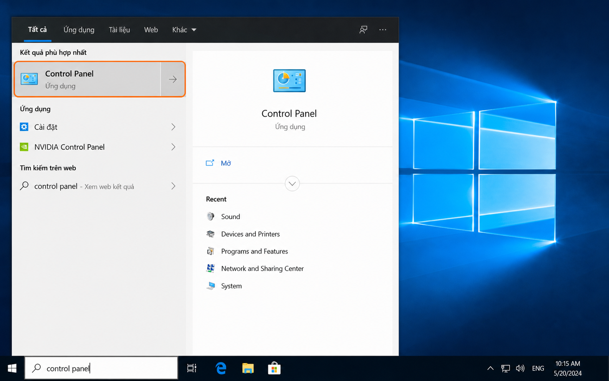
Bấm vào ảnh để xem lớn hơn.
Trong Control Panel, chọn Sound để mở cửa sổ thiết bị âm thanh.
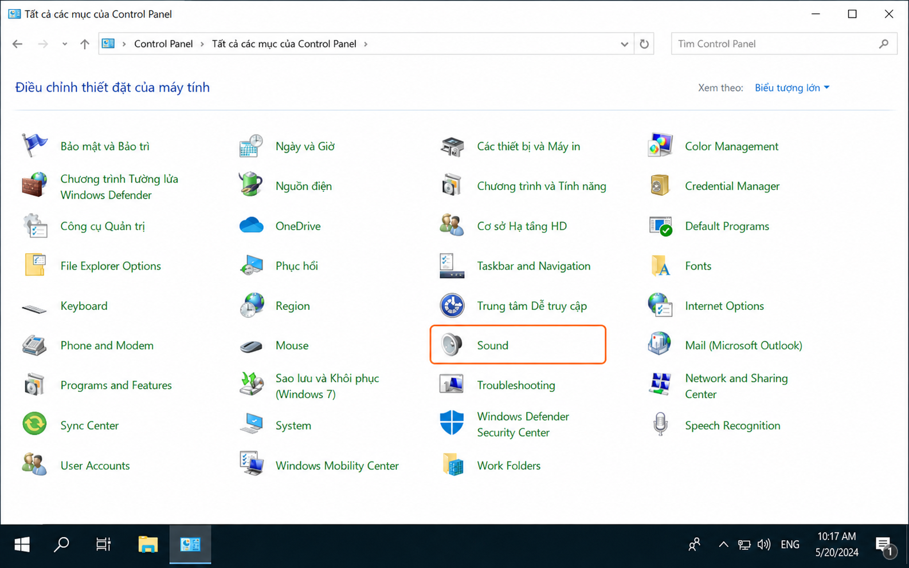
Bấm vào ảnh để xem lớn hơn.
Trong cửa sổ Sound, bấm sang tab Recording để xem danh sách microphone.
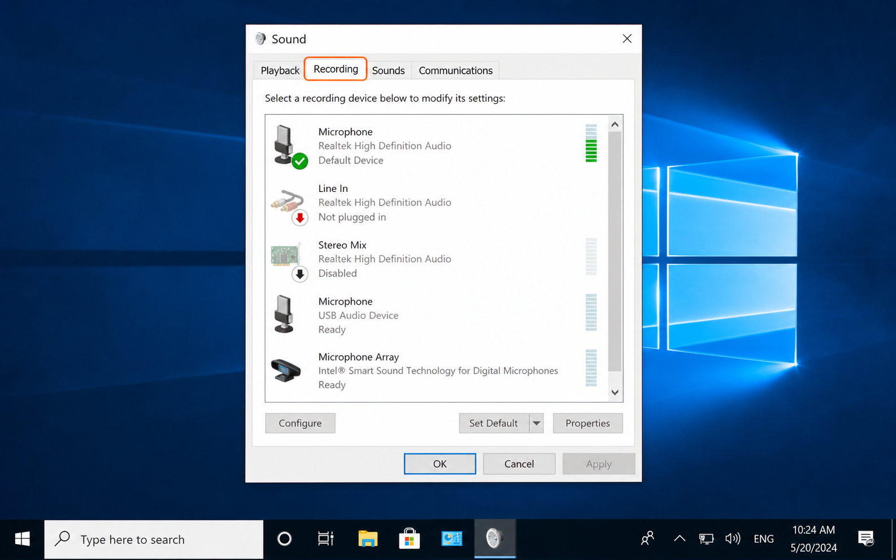
Bấm vào ảnh để xem lớn hơn.
Chọn đúng Microphone đang dùng, rồi bấm Properties.
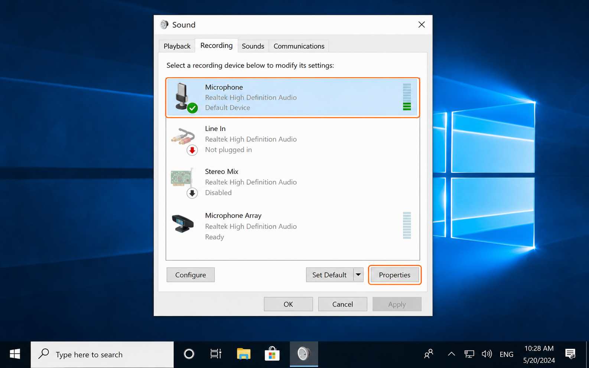
Bấm vào ảnh để xem lớn hơn.
Trong cửa sổ thuộc tính microphone, chuyển sang tab Advanced.
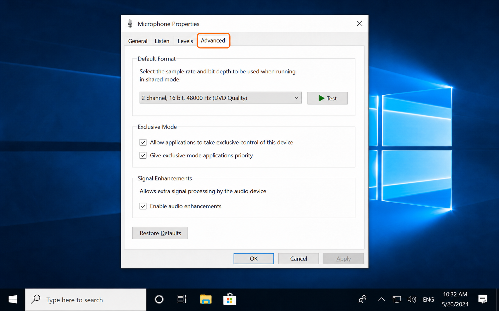
Bấm vào ảnh để xem lớn hơn.
Tắt tùy chọn audio enhancement trong tab Advanced, sau đó bấm Apply rồi OK.
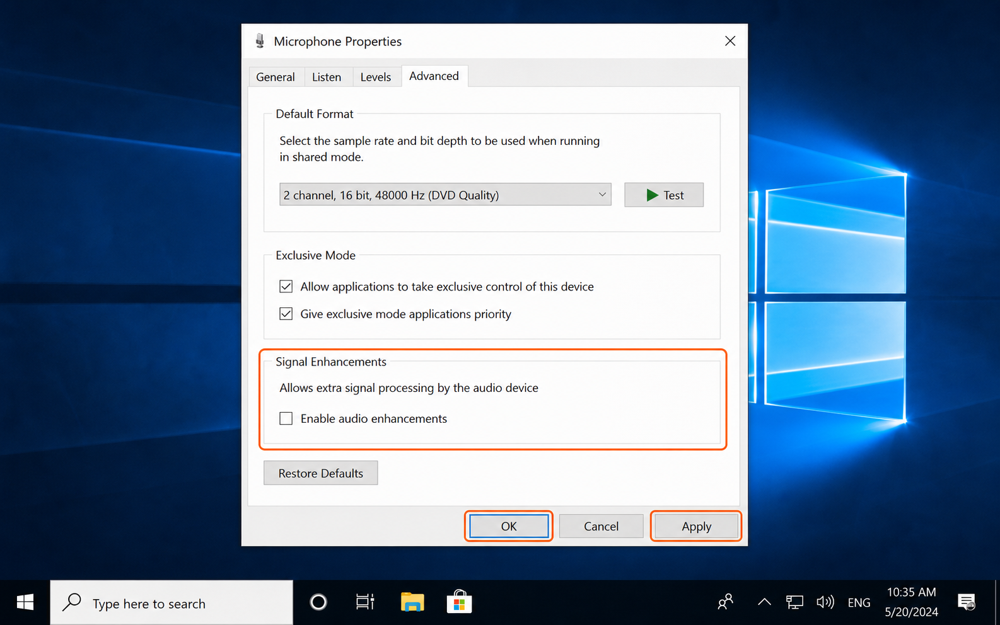
Bấm vào ảnh để xem lớn hơn.
Phần này không cần ảnh mẫu. Chỉ cần mở đúng ứng dụng của hãng và tắt tính năng lọc ồn tương ứng.
Nhiều laptop cài sẵn AI khử ồn cho microphone và đây thường là nguyên nhân khiến Slap PC không bắt được tiếng vỗ tay.